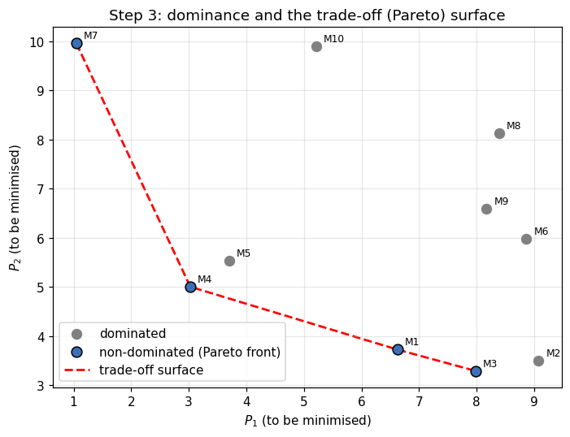
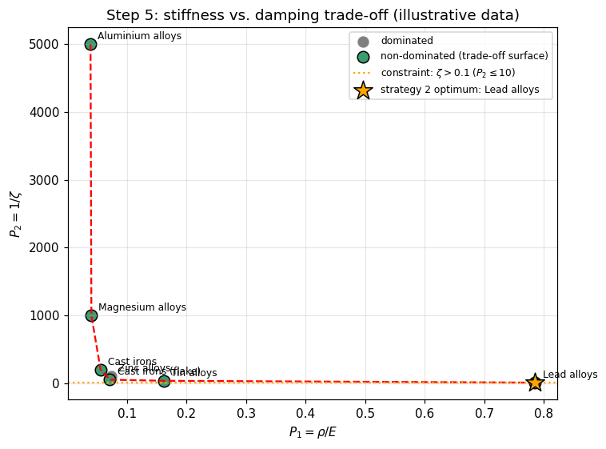
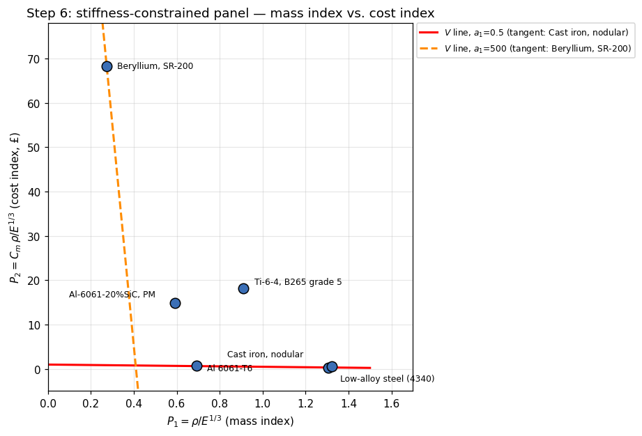
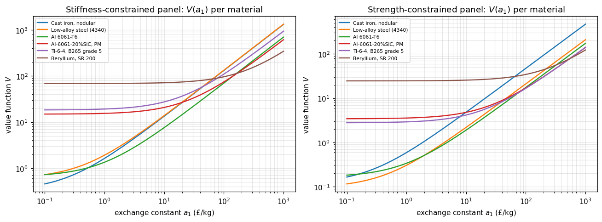
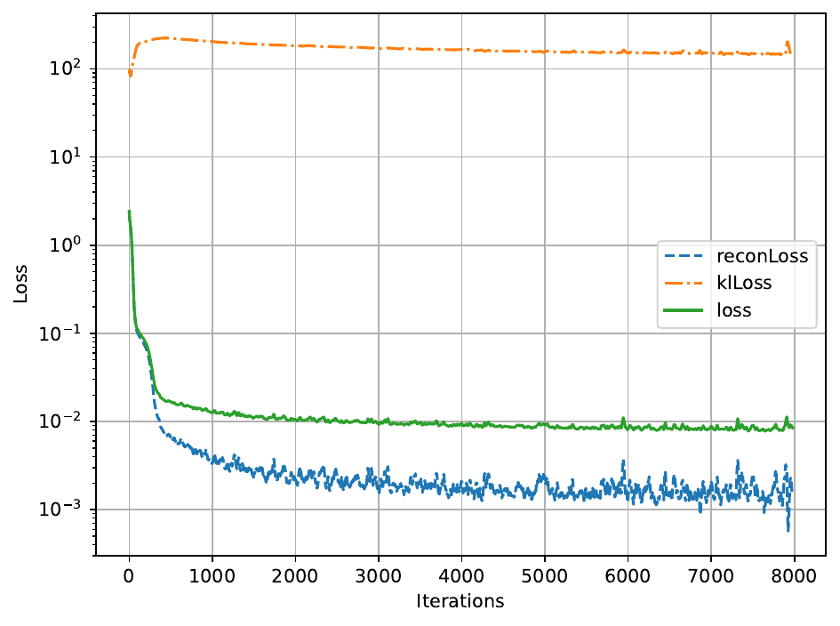
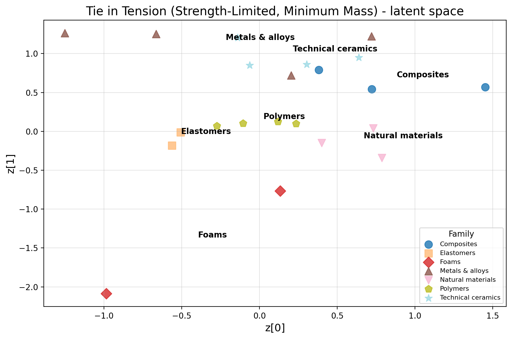
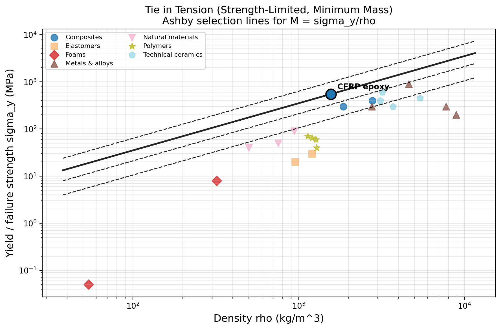

Michael Ashby's material-selection charts turned an abstract optimisation — choosing the best
material for a function — into something an engineer could see: two properties on
log–log axes, a guideline of the right slope, and the winning family lights up. This note follows
that idea through three more generations: a multi-objective value function for when one chart
is not enough, an eco-cost axis that turns the same method toward sustainability, and finally a
variational autoencoder whose latent space answers any material index by gradient ascent rather than a
slope read by eye — validated case by case, on thirteen structural and thermal design problems,
against the classical answer.
Long before eco-costs or learned latent spaces existed, Ashby developed a simple, powerful method for
selecting materials in engineering design. Plot two material
properties against each other on log–log axes — Young's modulus E against
density \rho, say — one bubble per material, grouped by family. For a given design
goal, mechanics gives a material index: a combination of properties to maximise or
minimise, derived by writing the objective, writing the constraint, and eliminating the free geometric
variable that connects them.
Consider a panel of length \ell, width b and free thickness
t, loaded in bending, with the objective of minimising mass
m=\ell b t \rho subject to a stiffness constraint
S = C_1 E I/\ell^3 \ge S^\ast with I=bt^3/12. Eliminating the free
variable t between these two equations gives:
m \;\propto\; \underbrace{\left(\frac{12\,S^\ast b^2}{C_1}\right)^{1/3}\ell^2}_{\text{fixed by the design}}
\;\times\; \underbrace{\frac{\rho}{E^{1/3}}}_{\text{material index}}
Everything in the first bracket is fixed by the design; only \rho/E^{1/3} depends on the
material choice. That is the material index: to minimise mass at a given stiffness, pick the material
with the smallest \rho/E^{1/3}. On log–log axes, lines of constant index are
straight, so sliding a guideline across the chart instantly reveals the winning family — one of the
most quietly effective ideas in engineering design.
That last sentence is worth deriving properly, because it is the whole reason the Ashby chart works at
all. Any index of the form M = E^a/\rho — density always to the first power, the
stiffness exponent a set by the geometry of the loading case — traces a straight
line on log–log axes. Taking logs of E^a=M\rho:
E^a = M\rho \quad\Longrightarrow\quad a\log E = \log M + \log\rho
\quad\Longrightarrow\quad \log E = \underbrace{\frac{1}{a}}_{\text{slope}}\log\rho \;+\; \frac{1}{a}\log M
So on a chart of \log E against \log\rho, every value of M
draws a line of the same slope 1/a; changing M only slides that
line up or down, parallel to itself. Since the goal is to maximise M, the favourable
direction is always up and to the left — and the last material the line touches before leaving the
data cloud is the answer. Three cases recur often enough to have their own guideline slope on the classic
stiffness–density chart:
Loading case
Exponent a
Index M
Guideline slope 1/a
Tie, axial, stiffness-limited
1
E/\rho
1
Beam or shaft, bending/torsion, stiffness-limited
1/2
\sqrt{E}/\rho
2
Panel, bending, stiffness-limited
1/3
E^{1/3}/\rho
3
These are exactly the three guideline families printed on Ashby's own stiffness–density chart, and
the algebra generalises without change to any pair of properties: replace E and
\rho with any two log-scaled axes and the same construction — a straight
guideline whose slope is fixed by the case, whose position encodes \log M — still
applies. This is the same construction used, non-interactively, by teaching tools such as the Cambridge
Engineering Department's material-selection charts, whose full
“Select chart” list the figure below reproduces: eleven property pairs, all drawn from the
same 22-material set used throughout this article.
Try it. Pick a chart from the dropdown below. Stiffness–density and
strength–density carry the named engineering cases derived above and in §2.2 (their guideline
slopes are checked directly against this article's own results table); every other pair still gets the
same draggable log–log guideline — just without an invented textbook name, since
M=Y^a/X is a valid index for any two properties, named case or not. Materials
below the line dim out of contention as you drag; the survivor, pushed as far up-left as the data allow,
is starred. Recycle fraction–cost is the one exception — a bounded 0–1 fraction
isn't a power law, so it's a plain scatter instead.
But real components rarely answer to one objective. A tie that must also be cheap, a spring that must
also be light, a heat exchanger that must resist both thermal shock and corrosion — the moment a
second performance metric P_2 matters as much as the first, P_1, a
single index and a single chart no longer say which material is best.
With two performance metrics P_1,P_2 — different units, in conflict — plot
every candidate on a P_1–P_2 chart. A solution is
dominated if another beats it on both metrics at once; the non-dominated
solutions trace the trade-off (or Pareto) surface — the only
candidates worth considering further.

Dominance, made visible: of ten illustrative candidates, only the six on the trade-off
surface are ever worth choosing — every dominated point is beaten on both axes by some
other candidate.
Applied to a genuine materials question — choosing a material that is both stiff
(P_1=\rho/E, to minimise) and well damped (P_2=1/\zeta, to minimise)
— the same dominance rule turns a table of alloys into a legible trade-off between aluminium at one
end and lead at the other:

Stiffness vs. damping: aluminium alloys anchor the stiff, poorly-damped end and lead alloys
the compliant, well-damped end, with cast irons and magnesium occupying the middle of the front.
A trade-off surface narrows the field to good compromises but does not by itself choose one. Three
strategies do: judgement (inspect and pick intuitively), constrain all-but-one objective and optimise the
remaining one, or combine every objective into a single composite score — a value
function.
The coefficients a_i are exchange constants:
a_i = \partial V/\partial P_i at fixed P_{j\ne i} — how much one
unit of P_i is worth. The best material minimises V. With two
objectives, lines of constant V are parallel straight lines of slope
-a_1/a_2, and the optimum sits where such a line is tangent to the
trade-off surface. When cost itself is one of the objectives (P_1=C,
a_1=1), substituting a new material for an incumbent is worthwhile exactly when
\frac{\Delta P}{\Delta C} \le -\frac{1}{a}.
Exchange constants come from technical/economic modelling, historical price data, or elicitation.
Published values for weight-saving in transport span four orders of magnitude: about £1/kg in a family car (fuel saving), £100–500/kg in
a civil aircraft (payload), and £3,000–10,000/kg in a space vehicle. The exchange
constant, not the material property alone, determines what “the best material” means for a
given application.
Return to the panel and add cost as a second objective. From the mass performance equation, define
P_1=\rho/E^{1/3} (mass index) and P_2=C_m\rho/E^{1/3}=C_m P_1 (cost
index, where C_m is cost per kilogram):
Since cost is one of the objectives, a_2=1, so V=a_1P_1+P_2.
Recomputing this directly from six real material datasheets, at the two exchange constants used in
Ashby's paper — a_1=£0.5/kg (family-car-like) and a_1=£500/kg
(aerospace-like) — reproduces the paper's own tables to within rounding:
Stiffness-constrained panel — recomputed from raw data (cf. Ashby's Table 4).
Material
ρ (Mg/m³)
E (GPa)
Cm (£/kg)
V, a1=0.5
V, a1=500
Cast iron, nodular
7.30
175
0.25
0.98
652.9
Low-alloy steel (4340)
7.85
210
0.45
1.25
660.9
Al 6061-T6
2.85
70
0.95
1.00
346.4
Al-6061-20%SiC, PM
2.77
102
25.0
15.12
311.2
Ti-6-4, B265 grade 5
4.43
115
20.0
18.68
473.7
Beryllium, SR-200
1.84
305
250.0
68.47
205.0

Mass index P_1 vs. cost index P_2. The shallow line (weight
cheap) is tangent to nodular cast iron; the steep line (weight expensive) is tangent to
beryllium.
At low a_1, nodular cast iron wins — cheap and conventional,
exactly right when cost outweighs weight. At high a_1, the ranking inverts and
beryllium takes over — mechanically remarkable and beside the point until weight
becomes expensive enough to pay for it. Sweeping a_1 continuously, rather than checking
two hand-picked points, exposes every crossover:

Rank-1 material as the exchange constant a_1 sweeps continuously from
£0.1/kg to £1000/kg, for both the stiffness- and strength-constrained panel. The optimum
changes discretely, at a handful of crossover points — the direct numerical analogue of sliding
a value-function line across the chart.
Beyond two objectives the graphical tangent-line construction stops being practical; the paper's own
answer is to rank candidates directly by V=\sum_i a_i P_i, no picture required
This is exactly the limit Part 2 below removes: a latent space needs no picture at any
number of objectives, because it never relied on one..
An eco-cost is the amount of money that would have to be spent today, with best
available technology, to prevent an environmental burden from exceeding what the Earth can carry in the
long run. It is a marginal prevention cost, not
a cost anyone has actually paid. Avoiding 1000 kg of CO2 emissions by building extra
offshore wind capacity to displace coal power costs on the order of €150, giving an eco-cost for
climate change of roughly:
The same logic applies to every impact category — acidification, eutrophication, toxicity,
resource depletion, land use — each with its own prevention cost, summed into a single monetary
eco-cost per kilogram. Expressing environmental impact this way, rather than in physical units or
dimensionless “points”, buys comparability across categories, plain communication to
engineers who already think in cost, and transparency: every number traces back to an explicit,
auditable prevention technology, unlike the less transparent weighting schemes used in classical Life
Cycle AssessmentBecause eco-costs cover the full environmental profile rather than only
carbon, they avoid “carbon tunnel vision”: a material with a small carbon footprint but
severe toxicity or depletion impacts does not automatically look attractive.. Eco-costs
become a business tool through the Eco-efficient Value Ratio:
\text{EVR} = \frac{\text{eco-costs}}{\text{value (price paid by the customer)}}
A lower EVR means the same customer value at a smaller environmental burden. The eco-costs framework
extends the Ashby method by replacing (or complementing) the price axis with the
eco-cost per unit volume, \text{eco-cost}_V = \text{eco-cost per kg}\times\rho,
so that a chart plots eco-cost against a mechanical property instead of against price. Three eco-material
indices follow the same derivation as any Ashby index:
A lower index means a more eco-efficient choice for that structural function: the same mechanical
performance for a smaller environmental prevention cost.
Illustrative material data and derived eco-material indices (order-of-magnitude values, for teaching only).
Material
ρ (kg/m³)
E (GPa)
σy (MPa)
eco-cost (€/kg)
IE
Iσ,bend
Structural wood
500
10.0
40
0.05
7.9
2.1
Concrete
2400
30.0
30
0.02
8.8
5.0
Mild steel
7850
210.0
250
0.40
216.7
79.1
Aluminium alloy
2700
70.0
100
1.00
322.7
125.3
PET plastic
1350
2.8
55
0.60
484.1
56.0
GFRP composite
1800
20.0
200
1.50
603.7
78.9
Two things stand out, typical of real eco-Ashby analyses: low-tech, low-processing materials such as
wood and concrete carry very low eco-costs per kilogram, often outweighing their modest mechanical
properties; metals and engineered composites, although mechanically excellent, carry a much higher
environmental prevention cost per unit of stiffness or strength delivered.
Eco-Ashby chart: eco-cost per unit volume vs. Young's modulus. The guideline of slope
1/2 traces constant I_E.Eco-Ashby chart: eco-cost per unit volume vs. yield strength, guideline of slope
2/3 for I_{\sigma,\text{bend}}.
The same six materials, ranked directly by each eco-material index — the eco-Ashby
chart's tabular twin, exactly as Step 4 above falls back to a ranked table once judgement by eye
stops scaling.
This is the added value of eco-Ashby charts: they let a designer ask not just “which material is
technically best?” but “which material achieves this technical performance at the
lowest environmental prevention cost?” — using the same intuitive, visual method
engineers already trust.
Section 1.4 already showed the chart's ceiling: the moment an index needs a third property —
a spring's \sigma_y^2/E combined with density for a minimum-mass spring, a thermal-shock
index needing E,\sigma_y,\alpha,k together — the chart runs out of dimensions, and
ranking directly by V=\sum a_iP_i is correct but no longer visual.
This part asks a different question: instead of exploring the database directly, can a model
learn the material property manifold, and can selection then become continuous optimisation on
that learned space rather than a database search? Concretely: train a variational autoencoder (VAE) to
reconstruct a material database in a low-dimensional latent space z, then find the
performance-maximising material by ordinary gradient ascent on z through the frozen
decoder. The same trained network, unmodified, then answers
any performance index over the properties it was given — only the objective function
changes.
Data & preprocessing. Extract the relevant properties for N
materials, \log_{10}-transform (properties span decades) and min–max normalise
to [0,1].
Train the VAE. A small encoder–decoder (inputDim → 250 → latentDim,
mirrored) learns to reconstruct the normalised table, minimising reconstruction error plus a
KL-divergence regulariser on the latent distribution.
Optimise the index in latent space. Starting from a grid or fixed-seed random set of
latent points, run Adam gradient ascent on the decoded index M(D_\theta(z)), with a
prior term keeping z near the training distribution.
Check against the exact Ashby chart. Evaluate the same index directly on the real
database (no VAE) and plot it classically, as ground truth for the latent optimum's nearest real
material.
The training objective is the usual VAE evidence lower bound:
where D_\theta is the trained decoder, \bar z, s_z the mean and spread
of the training latent codes, and M(\cdot) any of the indices this note has already met
— M_{\text{tie}}=E/\rho, M_{\text{beam}}=\sqrt{E}/\rho,
M_{\text{spring}}=\sigma_y^2/E, and so on.
The four steps illustrated below on one representative case — a strength-limited, minimum-mass tie
(M=\sigma_y/\rho) — on a 22-material selection spanning composites, metals,
ceramics, polymers, natural materials, foams and elastomers:

Training convergence for this case's VAE (20-iteration moving average), checked before every
latent-space search below.

Multi-start gradient ascent on log M. Every run drifts toward the same
corner of latent space — the composites cluster — and the nearest real material to the best
solution found is highlighted.

The exact Ashby chart for the same index, computed with no VAE involved. CFRP epoxy is the
true optimum — and it is also the material nearest the latent optimum above.2.2
Results across thirteen structural and thermal cases
The same code, unchanged, was run across thirteen extended cases drawn from the Ansys/Granta Performance
Indices Booklet — ties, beams, panels, columns,
shafts, flywheels, pressure vessels, springs, and thermal problems — plus the two baseline cases
(tie, beam) the original notebooks covered:
VAE latent-optimum nearest material vs. the exact-Ashby answer, across all thirteen extended cases.
Case
Index
Exact-Ashby winner
VAE match?
Beam, strength-limited
\sigma_y^{2/3}/\rho
CFRP epoxy (composites)
Yes
Column / strut, buckling
\sqrt{E}/\rho
Softwood pine (natural materials)
Yes
Flywheel
\sigma_y/\rho
CFRP epoxy (composites)
Yes
Minimum cost (stiffness)
E/(\rho C_m)
Softwood pine (natural materials)
Yes
Minimum cost (strength)
\sqrt{E}/(\rho C_m)
Softwood pine (natural materials)
Yes
Panel, stiffness-limited
E^{1/3}/\rho
Softwood pine (natural materials)
Yes
Panel, strength-limited
\sigma_y^{1/2}/\rho
CFRP epoxy (composites)
Yes
Pressure vessel, yield
\sigma_y/\rho
CFRP epoxy (composites)
Yes
Shaft, torsional stiffness
\sqrt{G}/\rho
Softwood pine (natural materials)
Yes
Shaft, torsional strength
\tau_y^{2/3}/\rho
CFRP epoxy (composites)
Yes
Spring, min. volume
\sigma_y^2/E
Natural rubber (elastomers)
Yes
Spring, min. mass
\sigma_y^2/(\rho E)
Natural rubber (elastomers)
Yes
Thermal distortion
k/\alpha
Silicon carbide (ceramics)
Yes
Thermal shock
\sigma_y/(E\alpha)
Natural rubber (elastomers)
NoSee §2.3 — this is the one genuine failure in the table, discussed rather than hidden.
Thermal shock (with conductivity)
\sigma_y k/(E\alpha)
Al/SiC composite (composites)
No
Tie, strength-limited
\sigma_y/\rho
CFRP epoxy (composites)
Yes
Eleven of thirteen extended cases — and both baseline tie/beam cases — land the latent
optimum on the exact-Ashby family, with no case-specific tuning beyond the property subset and the index
formula itself. One case is worth dwelling on because it recovers a genuinely surprising, textbook result
rather than an obvious one: the spring index \sigma_y^2/E is maximised,
in this material set, by natural rubber — not steel, as the hero figure at the top
of this article shows.
That caveat is the point: \sigma_y^2/E is derived assuming failure by yield, and is only
a sensible design criterion within a material class for which yielding — not creep, not fatigue,
not an operating-temperature limit — is actually the constraint that matters. The index is not
wrong; it is being asked a narrower question than “what should I build my valve spring from?”
This is exactly the discipline Ashby charts have always demanded of their user, restated for a network
that has no notion of “spring steel” unless it is told to look only among metals.
The one genuine failure in the table is instructive rather than embarrassing. Thermal shock
resistance mixes four properties (E,\sigma_y,\alpha,k) drawn from only 22
training materials — the most data-starved case in this study. An early version of every
multi-property case (spring, minimum-cost, thermal shock) used a fixed 2-dimensional latent space
regardless of how many properties were involved; this under-constrained the decoder and let the
optimiser exploit extrapolation artefacts — decoded property combinations, such as a material
simultaneously as light as a foam and as stiff as a metal, that correspond to no real material. Setting
the latent dimension equal to the property count fixed this for the 3-property cases (spring,
minimum-cost). The 4-property thermal-shock case remains the exception: the decoder can still extrapolate
away from the real-material manifold in the region the optimiser is free to explore, so its
nearest-material lookup does not reliably reproduce the exact ranking — even though gradient ascent
still correctly improves the decoded index at every step. This is a sample-efficiency limit, not a
failure of the optimisation itself, and it is exactly why every case in this study prints both
the VAE result and the closed-form Ashby ranking side by side, rather than trusting the shortcut
alone.
Line the three parts of this note up against the plain 1990s Ashby chart, and a single lineage appears,
each generation answering a limit of the one before it.
Four generations of the same idea, each answering a limit of the one before it.
The chart compresses a mechanics derivation into a slope on two log axes —
unbeatable for one index, incapable of more than two properties at a time. The value
function removes that ceiling by folding any number of objectives into one weighted sum, at the
cost of the picture: past two dimensions, Ashby's own method falls back to a table and a ranking.
The eco-Ashby chart does not change the mathematics at all — it changes what one
of the axes is allowed to mean, substituting a rigorously defined environmental prevention cost
for price, and in doing so turns “which material is best?” into “best for whom, and at
what true cost?” without asking the designer to learn a new method.
The VAE is where the ceiling actually lifts. A value function still needs a human to
supply exchange constants and, for more than two objectives, gives up the chart's visual logic entirely;
a latent space needs neither. Gradient ascent through a trained decoder handles two properties or six
with the same code, the same architecture, the same four steps — the tangent-line construction of
§1.4 and the multi-start search of §2.1 are, underneath, the same act of sliding something
across a surface until it stops improving. And because eco-cost is, mechanically, just another decoded
property, the minimum-cost case in §2.2 already shows the natural next experiment: fold Idemat
eco-cost data into the same latent space §2 trains on price and mechanics, and the eco-Ashby chart
of §1.5 becomes one more index an already-trained network answers by gradient ascent — no new
chart, no new axes, no ceiling at two.
Ashby's real contribution was never the two axes. It was insisting that “best material” is
always the answer to a specific, statable question — this function, this constraint, this exchange
constant — never a property of the material alone. A learned latent space does not retire that
discipline; it is what lets the question finally be asked with as many variables as the engineering
actually has, then searched instead of read off a slope — a map redrawn for as many dimensions as
the problem needs, not the two a sheet of paper allows.
Contributions
Joseph Morlier (ISAE-SUPAERO) posed the extension and supplied the source notebooks and LaTeX notes for
Part 1. The Ashby-VAE case-study code, the eco-costs/eco-Ashby derivations, and the synthesis in
Part 3 were drafted with Claude.
Data & code
Figures are reproduced from eco_costs_and_ashby_charts.ipynb,
ashby_method_step_by_step.ipynb, and the Ashby-VAE case-study notebooks
. Material-property and eco-cost figures used in Part 1's worked
examples are illustrative, order-of-magnitude values for teaching, not authoritative Idemat/CES data.
Related generative-design work on catalog selection: .
Limitations
The thermal-shock case (§2.3) is the one extended case where the VAE's nearest-material lookup does
not reliably match the closed-form Ashby ranking, for the data-availability reasons discussed there. All
thirteen extended cases and the two baseline cases print the VAE result and the exact Ashby ranking side
by side, rather than reporting the VAE result alone.